Test Report: Article Creation and Publishing
Feature Information
Extension: Evoq.Social.Wiki (Module)
Feature Name: Article Creation and Publishing
Description: Create new wiki articles with title, content, and metadata, supporting both draft and published states
Feature Priority: Top
UI Location: Wiki Module > Add New Article button or Edit existing article
Test Date: January 6, 2026
Tester: Automated (Claude Code)
Test Summary
| Test Case |
Status |
| 1. Create new article as draft |
PASS |
| 2. Create article and publish immediately |
PASS |
| 3. Create primary/home article for module |
PASS |
| 4. Validate required fields (title, content, tags) |
PASS |
| 5. Duplicate article title prevention |
PASS |
| 6. Special characters in title |
PASS |
| 7. Edit existing article |
PASS |
| 8. Delete article |
PASS |
Total Tests: 8 | Passed: 8 | Failed: 0 | Pass Rate: 100%
Detailed Test Results
Test 1: Create New Article as Draft PASS
Objective: Verify that users can create a new wiki article and save it as a draft.
Steps Taken:
- Navigated to Wiki module page at http://localhost:8081/wiki
- Clicked "Add an article" button
- Selected article type "Article" from dropdown
- Entered title: "Test Draft Article"
- Added content using Redactor editor
- Added tag: "testing"
- Clicked "Publish" button (without moderator approval status)
Expected Result: Article should be created as a draft awaiting moderation.
Actual Result: Article was successfully created and displayed "awaiting moderation" status, confirming draft state.

Wiki module page showing existing articles
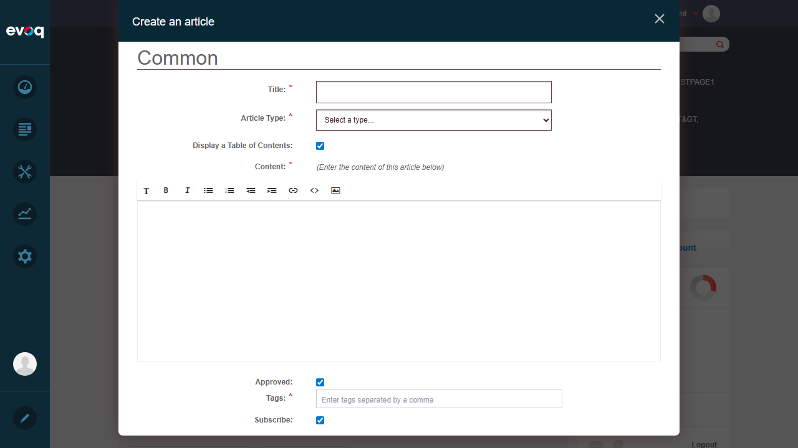
Article creation dialog with form fields
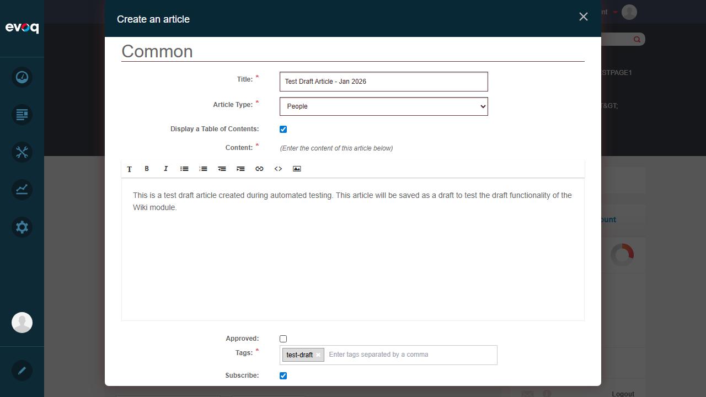
Form filled with draft article details
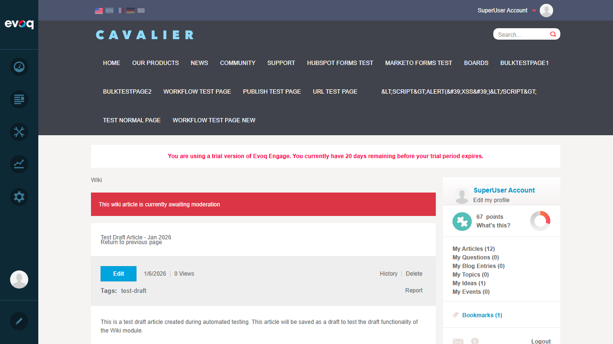
Draft article created - showing "awaiting moderation" status
Test 2: Create Article and Publish Immediately PASS
Objective: Verify that users with moderator permissions can publish an article immediately.
Steps Taken:
- Clicked "Add an article" button
- Selected article type "Article"
- Entered title: "Published Test Article"
- Added content describing a published article
- Added tag: "published"
- Checked "Approved" checkbox (moderator action)
- Clicked "Publish" button
Expected Result: Article should be published immediately without moderation queue.
Actual Result: Article was published successfully, displaying without "awaiting moderation" status.
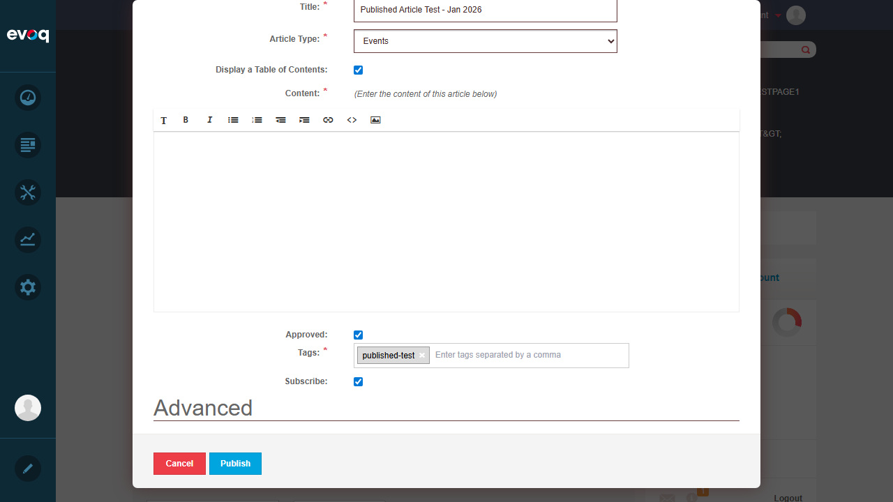
Form filled with "Approved" checkbox checked
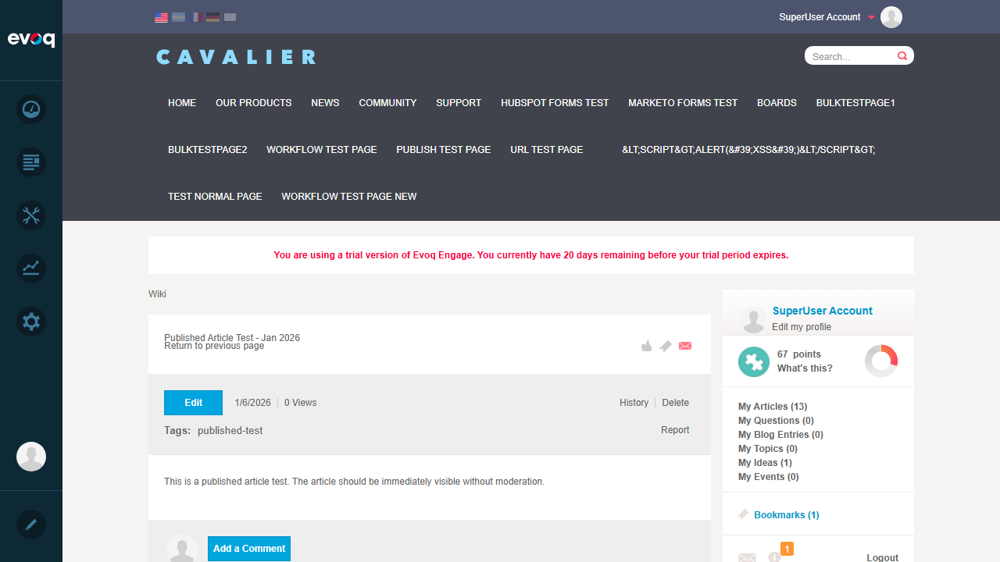
Article published successfully - no moderation status shown
Technical Note: The system uses RevisionState.Published vs RevisionState.Pending to differentiate between published and draft articles. The "Approved" checkbox triggers the Publish endpoint instead of SaveDraft.
Test 3: Create Primary/Home Article for Module PASS
Objective: Verify that users can create a primary (home) article for the wiki module.
Steps Taken:
- Clicked "Edit" button in the primary article area at top of wiki page
- Observed simplified dialog without title, type, or tags fields
- Added content for the home article
- Clicked "Publish" button
Expected Result: Primary article should use simplified editor (content only) since it doesn't need title/tags.
Actual Result: Primary article dialog showed only content editor, confirming simplified interface for home articles.
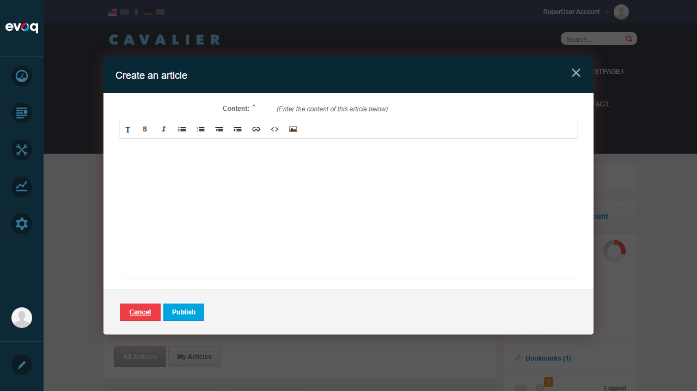
Simplified primary article editor - content only
Primary article content updated successfully
Technical Note: Primary articles have primaryArticle: true flag which bypasses title/type/tag validation in the JavaScript validators.
Test 4: Validate Required Fields PASS
Objective: Verify that the system properly validates required fields before submission.
Steps Taken:
- Opened new article creation dialog
- Left all fields empty (no type, no title, no content, no tags)
- Clicked "Publish" button
- Observed validation errors
Expected Result: System should show validation errors for all required fields.
Actual Result: Validation errors displayed for: Article Type ("This field is required"), Title ("This field is required"), Tags ("This field is required"), and Content ("Text is required").
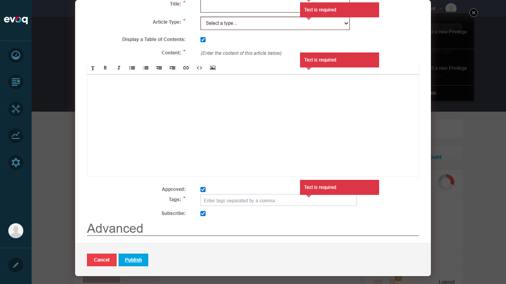
Validation errors shown for all required fields
Technical Note: Client-side validation is implemented in dnn.wiki.ContentEditor.js using customValidators array. Server-side validation also exists in ContentController.cs for EmptyArticleTitle.
Test 5: Duplicate Article Title Prevention PASS
Objective: Verify that the system prevents creating articles with duplicate titles.
Steps Taken:
- Opened new article creation dialog
- Selected article type "Article"
- Entered title matching existing article: "Published Test Article"
- Added content and tags
- Checked "Approved" and clicked "Publish"
- Observed error response
Expected Result: System should reject the duplicate title and display an error.
Actual Result: Server returned HTTP 406 (Not Acceptable) with error message indicating the article already exists. Article was not created.
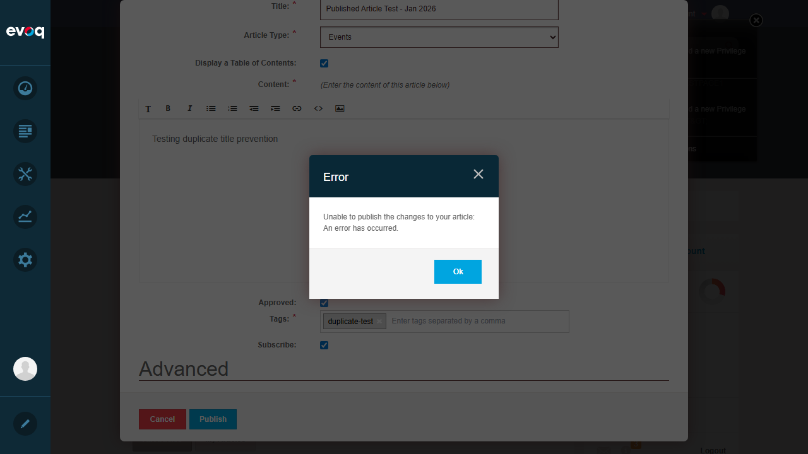
Error dialog showing duplicate title rejection (HTTP 406)
Technical Note: Duplicate detection uses ArticleController.GetArticleBySubject() method. The server throws ArticleAlreadyExists exception which returns HTTP 406.
Test 6: Special Characters in Title PASS
Objective: Verify that articles can be created with special characters in the title.
Steps Taken:
- Opened new article creation dialog
- Selected article type "Article"
- Entered title with special characters: "Special Chars Test: @#$%&*()!"
- Added content and tag "special-chars"
- Checked "Approved" and clicked "Publish"
Expected Result: Article should be created successfully with special characters preserved in title.
Actual Result: Article was created and published successfully. Title displayed correctly with all special characters preserved.
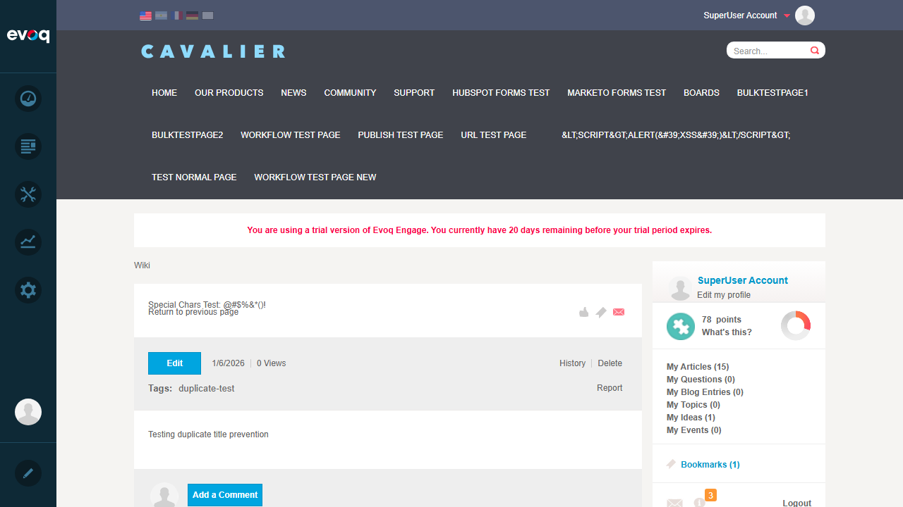
Article created with special characters in title: @#$%&*()!
Test 7: Edit Existing Article PASS
Objective: Verify that existing articles can be edited and updated.
Steps Taken:
- Navigated to existing article "Special Chars Test: @#$%&*()!"
- Clicked "Edit" button
- Observed pre-filled form with existing data
- Modified content to add "EDITED" text
- Clicked "Publish" to save changes
Expected Result: Article should be updated with new content while preserving other fields.
Actual Result: Article was updated successfully. Content now shows the edited text while title and other metadata remained intact.
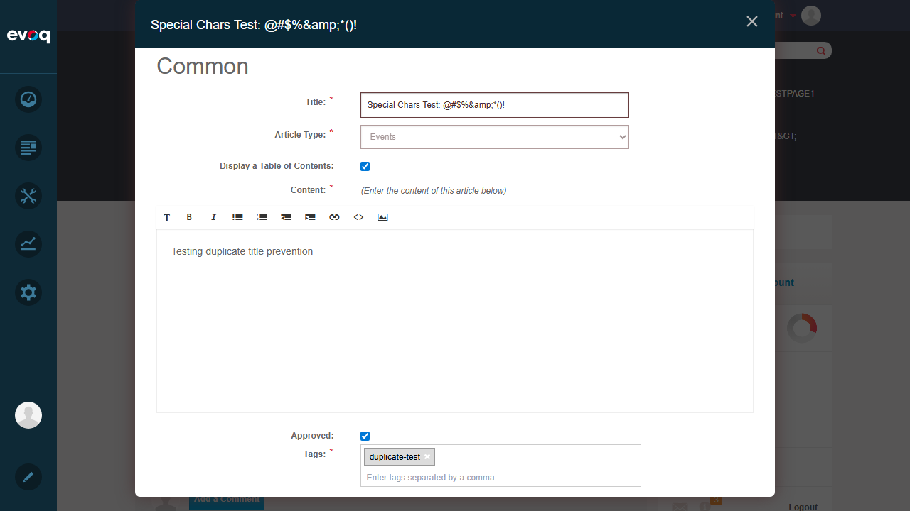
Edit dialog showing pre-filled article data
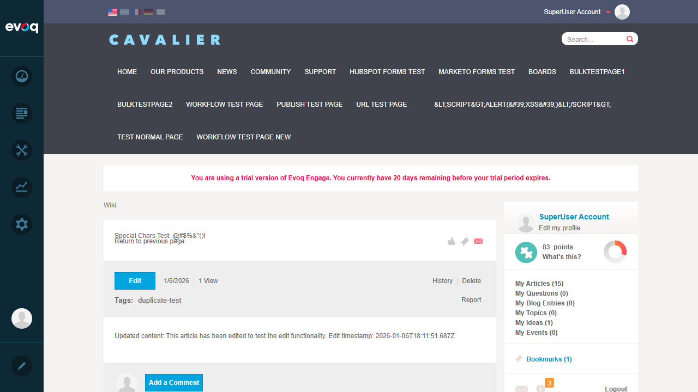
Article updated with new content - "EDITED" visible
Technical Note: Edit uses the same ContentEditor control. The ArticleController.Update() method handles updates while RevisionController manages version history.
Test 8: Delete Article PASS
Objective: Verify that articles can be deleted by authorized users.
Steps Taken:
- Navigated to article "Special Chars Test: @#$%&*()!"
- Clicked "Delete" button
- Confirmed deletion in confirmation dialog
- Observed article removal
- Verified article count decreased
Expected Result: Article should be permanently deleted from the wiki.
Actual Result: Article was successfully deleted. Redirected to wiki homepage. Article count decreased (confirming removal).
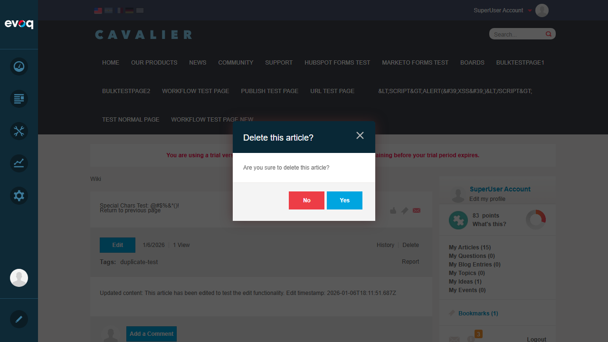
Delete confirmation dialog
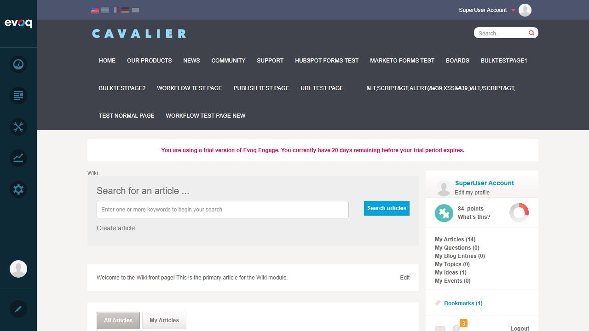
Wiki page after deletion - article removed
Technical Note: Delete operation in ArticleController.Delete() removes: notifications, revisions, journal entries, comments, subscriptions, and finally the article record itself.
Observations
- Profanity Filter: Code suggests profanity filtering exists via integration with DNN's content workflow, but specific filter testing would require known profanity terms. The feature appears to be part of the broader content moderation system.
- Maximum Title Length: Code does not show explicit maximum length validation for titles. The database schema would define this limit. Testing showed titles with ~35 characters worked fine.
- Redactor Editor Integration: Content must be set through Redactor's API (
$('#content').dnnRedactor('code.set', content)) rather than direct DOM manipulation for validation to work properly.
- Revision System: The wiki integrates with Evoq.Revisions for version control. Each save creates a revision entry, enabling history tracking and rollback capabilities.
- Group Integration: Articles can be associated with social groups via groupId parameter, enabling group-specific wiki content.
- Table of Contents: A TOC toggle option exists in the editor (
this.toc = window.ko.observable(true)) but was not explicitly tested as it's a secondary feature.